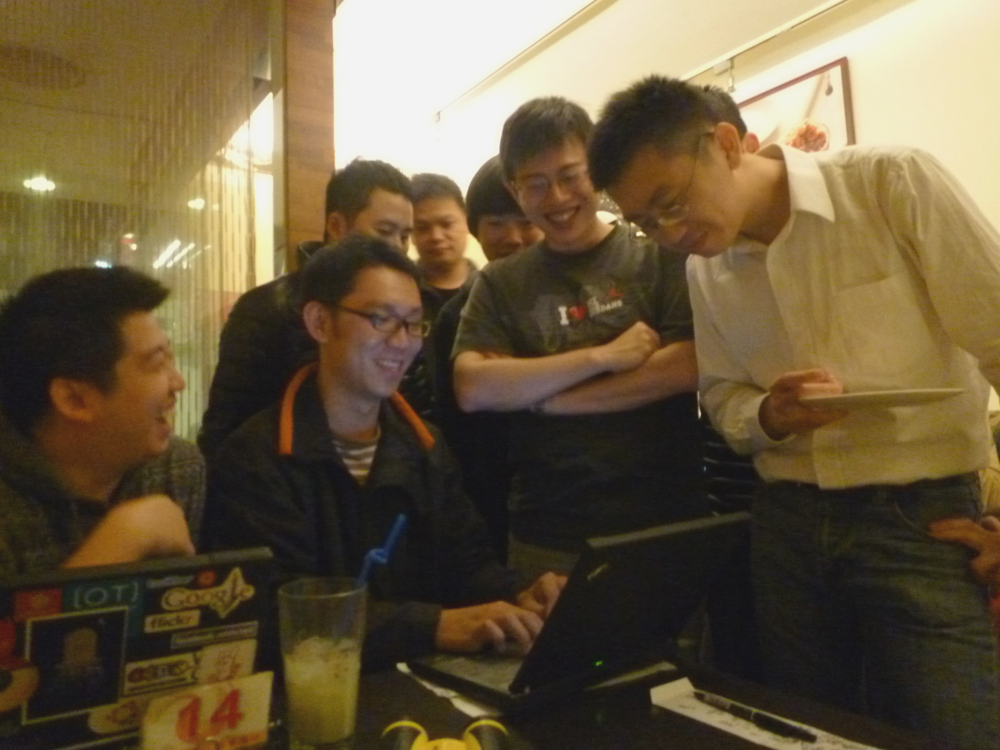

把開發當興趣的開發者聚會－Hacking Thursday

你是否有參加過類似聚會的經驗，參與者為了共同興趣而相聚，聚會中笑鬧聲、交談聲不曾間斷，令人放鬆並且投入，往往等到即將散會，都還來不及瞄一眼牆上時鐘，才驚覺美好的時光飛逝得如此迅速。對於熱衷於寫程式的開放源碼開發者而言，Hacking Thursday（以下簡稱 H4）就是這樣的一個聚會。
每個星期四的晚上，都會有一群開發者在 101 迎風城咖啡主題美食館南西店（如遇店家整修，則可能改至民權西路 11 號之 101 咖啡主題美食館民權店）裡進行固定聚會。H4 聚會沒有事前安排固定主題，完全以隨性、自由的方式分享；無論是工作上遇到的難題亦或是最近習得的新技術，都是成員們口中談論的話題。有時討論狀況過於熱烈時，興致一來還會當場架起投影機及錄影設備開始進行實作分享。除此之外，成員們還會一起開發開源專案，從歷史來說，H4 聚會就是先從開發討論開始，漸漸演變成現在十幾個人的固定社群聚會。
起初 Mat 和 Thinker 兩個人於 Tossug 社群聚會中結識，大約從 2008 年 4 月開始，因為想要一起做專案，於是另外相約在星期四碰面討論，後來經由社群朋友的口耳相傳，漸漸有愈來愈多人來共同參與。而在 Mat 的努力奔走維繫之下，聚會的人數得以維持在一定的水準，其後，參與 H4 聚會也就成為國內開源專案的開發者，在星期四下班後的另一個選擇。
或許是因為對於寫程式有一股莫名的熱忱，H4 的成員往往會將程式融入到生活中，遇到無法決定的大小事都會想要用程式來解決。例如要決定每個人分享的順序或是遇到要抽籤的時候，就會有人主動開始寫程式，用程式亂數產生的結果來決定分享的順序或選出籤王是誰。還有一次因為聚會地點沒有定論，也是透過分析程式，將每個人住家的經緯度輸入去計算，找出對每個人來說最方便的最佳解。另外，對於重複的、不需動腦的例行公事，H4 成員也都交由機器人來代勞，寫了一支機器人程式，在論壇上固定發送聚會通知，以最省力且有效率的方式達成目的。
除了將程式帶進自己的實際生活外，對於技術面的公共事務 H4 的成員也展現出十足的熱情。不難發現他們經常在各大論壇上出沒，有人提出技術相關的疑惑時，他們就會跳出來幫這些疑難雜症找出解答，將程式的 source code 挖出來研究，找到問題所在，並將相關的 Bug 修改好。也因為看到 H4 成員對於開發的投入及寫程式的熱情，不乏國內廠商紛紛主動提供外包案或工作職缺的資訊到 H4 論壇上，不僅如此，H4 輕鬆自在又能提升實力的聚會模式也被社群朋友帶到香港，今年 5 月香港的開發者成立了 Hacking Thursday Hong Kong－駭能工程，並在其官方部落格上聲明舉辦開發者聚會的點子是源自台灣 Hacking Thursday 聚會，從這個範例看來，在許多方面 H4 聚會都已經受到各界的認同與肯定。

▲ H4 聚會平常歡樂討論的情形
其實有很多參與 H4 的社群朋友都不是資訊相關領域的本科生，H4 雖然是開發者的聚會，但是也有不少創投、自由工作者、藝術家等以寫程式為興趣的開發者共同參與。H4 的成員把寫程式當成一種興趣，有不少人是靠著自學的方式投入開發的行列。成員 FourDollars 說：「對寫程式有沒有熱忱看眼神就知道了，熱愛寫程式的開發者在談論技術時，眼睛會發亮，並且散發出專注、狂熱的感覺！」
撇去白天上班的緊繃壓力，晚上在 H4 與朋友研究、交流新技術與新發現，開玩笑時可以放肆大笑，研究技術時可以認真投入，對什麼專案有興趣就找志同道合的朋友合作開發！對於 H4 成員來說，聚會不僅是個可以放鬆和增進能力的地方，還是一個認識朋友結交知己的場所，在這樣互相合作進步的動力驅使之下，不但能激發參與者更多創意點子，更能找到協力開發程式的樂趣與能量。
Hacking Thursday 官方網站：
https://hackingthursday.wikidot.com/
Hacking Thursday Google 網上論壇：https://groups.google.com/group/hackingthursday?hl=zh-TW